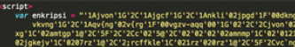

This phishing landing we examined xor decodes charcode stored in a variable and then writes out the page via
document.write. The obfuscated landing page begins as follows by defining an encoded string:

The JavaScript which will xor the string with 2 appears below (Fig. 31):

The resulting code after the xor still needs a another round of decoding
After URL decoding, the normalized Dropbox phishing site looks like this (Fig. 33):